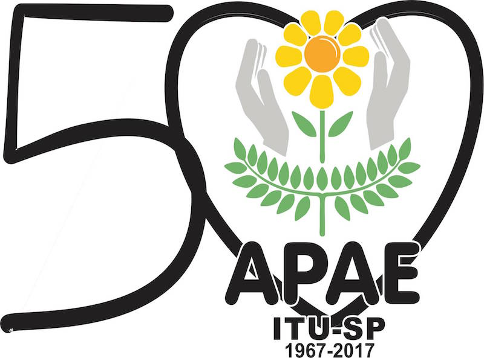

Telemarketing é responsável por cerca de 40% dos recursos arrecadados pela APAE de Itu
20 de Julho de 2017 às 07:00
Há quem se arrepie só de ouvir falar em telemarketing, mas apesar da aparente má fama, esta ferramenta, se usada da forma correta, pode se tornar uma poderosa aliada — e com o Terceiro Setor não é diferente. Um bom exemplo é a Associação de Pais e Amigos dos Excepcionais - APAE de Itu, no interior de São Paulo. Considerado o principal meio de captação da entidade, o telemarketing é responsável por cerca de 40% dos recursos financeiros — o restante vem de convênios. Num mercado saturado por esse tipo de abordagem, a experiência da equipe tem sido o grande ativo da instituição.
“Somos sete pessoas na área. A que está há menos tempo tem 12 anos de APAE. Já a mais antiga está há quase duas décadas, desde que começou esse tipo de captação”, diz Patrícia Viana Souza dos Santos, coordenadora do setor de telemarketing da instituição.
É esse know-how que faz a diferença na hora de se dirigir a potenciais doadores. “Trabalhamos com um script, separado em tópicos, sobre o que deve ser dito. Não dá para ser algo muito longo, e cada operadora de telemarketing acaba imprimindo um jeito de falar, criando uma confiança que é essencial para esse tipo de abordagem”, explica.
A habilidade para fisgar o doador ganha ainda mais relevância por uma peculiaridade da instituição: o estatuto das APAEs estabelece que cada unidade só pode angariar recursos no município onde atua. “A população recebe cada vez mais ligações de organizações que trabalham em cidades próximas. É importante que nossa equipe consiga convencer o potencial doador sobre a importância de investir recursos na cidade em que ele vive. Precisamos mostrar bem o que fazemos e como isso beneficia a pessoa”, ressalta Patrícia.
Criado num momento em que os meios de pagamento informatizado ainda eram raros, o setor de telemarketing da APAE de Itu até hoje mantém em sua equipe três motoboys — além de três operadoras e uma coordenadora —, responsáveis por recolher doações e entregar recibos.
“Itu é uma cidade pequena, com muita gente de idade que não sabe usar meios eletrônicos. Os motoqueiros são fundamentais para nossa captação, e eles são os mesmos há anos, o que cria um vínculo que dá tranquilidade ao doador”, afirma.
Antigos doadores
Se para captar recursos a tecnologia não tem papel fundamental, o mesmo não acontece quando o assunto é acompanhar o comportamento dos doadores. “Há mais de 10 anos mantemos um sistema informatizado com essa finalidade. Por exemplo, se num mês alguém não doa, recebemos um alerta e fazemos o contato para verificar o que aconteceu.”
E manter uma boa e sólida relação com quem contribui há um longo tempo se tornou ainda mais estratégico após a disseminação da telefonia móvel. “No começo, de cada 10 ligações que fazíamos, nove eram atendidas. Principalmente com a popularização do celular, caiu muito a taxa de resposta”, constata Patrícia.
Essa situação levou a adaptações no trabalho. Atualmente, o telemarketing da APAE de Itu funciona das 8h às 14:30. Das seis horas e meia, no entanto, apenas duas são dedicadas à procura de novos doadores.
Mas a importância do telemarketing para a organização não se restringe à captação de recursos, afirma a coordenadora. “O restante do tempo é usado para contato com quem já doa, seja para falar de outros assuntos, como convites para festas ou rifas, seja para contatar quem deixou de fazer uma contribuição.”
“Somos sete pessoas na área. A que está há menos tempo tem 12 anos de APAE. Já a mais antiga está há quase duas décadas, desde que começou esse tipo de captação”, diz Patrícia Viana Souza dos Santos, coordenadora do setor de telemarketing da instituição.
É esse know-how que faz a diferença na hora de se dirigir a potenciais doadores. “Trabalhamos com um script, separado em tópicos, sobre o que deve ser dito. Não dá para ser algo muito longo, e cada operadora de telemarketing acaba imprimindo um jeito de falar, criando uma confiança que é essencial para esse tipo de abordagem”, explica.
A habilidade para fisgar o doador ganha ainda mais relevância por uma peculiaridade da instituição: o estatuto das APAEs estabelece que cada unidade só pode angariar recursos no município onde atua. “A população recebe cada vez mais ligações de organizações que trabalham em cidades próximas. É importante que nossa equipe consiga convencer o potencial doador sobre a importância de investir recursos na cidade em que ele vive. Precisamos mostrar bem o que fazemos e como isso beneficia a pessoa”, ressalta Patrícia.
Criado num momento em que os meios de pagamento informatizado ainda eram raros, o setor de telemarketing da APAE de Itu até hoje mantém em sua equipe três motoboys — além de três operadoras e uma coordenadora —, responsáveis por recolher doações e entregar recibos.
“Itu é uma cidade pequena, com muita gente de idade que não sabe usar meios eletrônicos. Os motoqueiros são fundamentais para nossa captação, e eles são os mesmos há anos, o que cria um vínculo que dá tranquilidade ao doador”, afirma.
Antigos doadores
Se para captar recursos a tecnologia não tem papel fundamental, o mesmo não acontece quando o assunto é acompanhar o comportamento dos doadores. “Há mais de 10 anos mantemos um sistema informatizado com essa finalidade. Por exemplo, se num mês alguém não doa, recebemos um alerta e fazemos o contato para verificar o que aconteceu.”
E manter uma boa e sólida relação com quem contribui há um longo tempo se tornou ainda mais estratégico após a disseminação da telefonia móvel. “No começo, de cada 10 ligações que fazíamos, nove eram atendidas. Principalmente com a popularização do celular, caiu muito a taxa de resposta”, constata Patrícia.
Essa situação levou a adaptações no trabalho. Atualmente, o telemarketing da APAE de Itu funciona das 8h às 14:30. Das seis horas e meia, no entanto, apenas duas são dedicadas à procura de novos doadores.
Mas a importância do telemarketing para a organização não se restringe à captação de recursos, afirma a coordenadora. “O restante do tempo é usado para contato com quem já doa, seja para falar de outros assuntos, como convites para festas ou rifas, seja para contatar quem deixou de fazer uma contribuição.”
Notícias mais populares
Gestão
Em agosto de 2017, a revista ÉPOCA e o Instituto Doar divulgaram a primeira ediç&...
Contexto e tendências
Criado para tornar mais transparentes as parcerias entre a administração públic...
Profissional captador
A captação de recursos é fundamental para a sustentabilidade de uma organiza&cc...